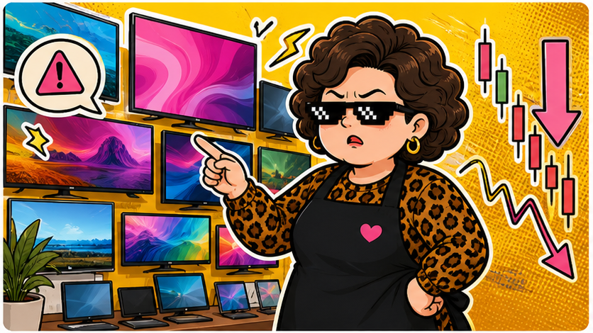

2409 友達 · 2026/05/26
友達很熱鬧，但面板股不是特價菜。
5/26 收 22.00，跌 2.40，成交量 818,361,725 股。價格看起來親民，波動可一點都不客氣。
收盤價22.00
漲跌▼ -2.40
成交量8.18 億股
阿姨一句話：友達今天像菜市場最吵那攤，大家都在看，但不代表每個人都適合伸手拿。
今天在演什麼
友達屬於面板股，故事常常跟景氣循環、庫存水位、面板報價和終端需求綁在一起。今天成交量很大，代表市場注意力有進來，但收跌也說明買賣雙方拉扯很激烈。
這種低價題材股容易讓人覺得「買一張好像還好」，可是阿姨要碎念：便宜不是防摔殼。面板股如果報價轉弱、需求降溫，股價會比婆媽群組傳言還會變臉。
阿姨看點
- 看成交量：量大代表有人在進出，但也可能是短線換手很兇。
- 看產業報價：面板報價與庫存，比今天一根紅綠棒更重要。
- 看自己承受度：低價股不是低風險股，停損線要先想好。
⚠️ 阿姨的風險提醒（你一定要看）
📌 本站所有股票 ETF 內容僅供教育與資訊參考，不是投資建議，不保證任何收益。
📌 所有數字與範例皆為靜態展示資料，未串接即時市場數據，請勿以此做為買賣依據。
📌 任何投資都有風險，包括本金損失的可能。投資前請自行做功課、評估財務狀況，必要時諮詢專業顧問。
📌 阿姨碎念歸碎念，賺錢賠錢都是你自己的事。阿姨不幫你決定，只幫你補習。
資料來源：臺灣證券交易所 2409 日成交資訊